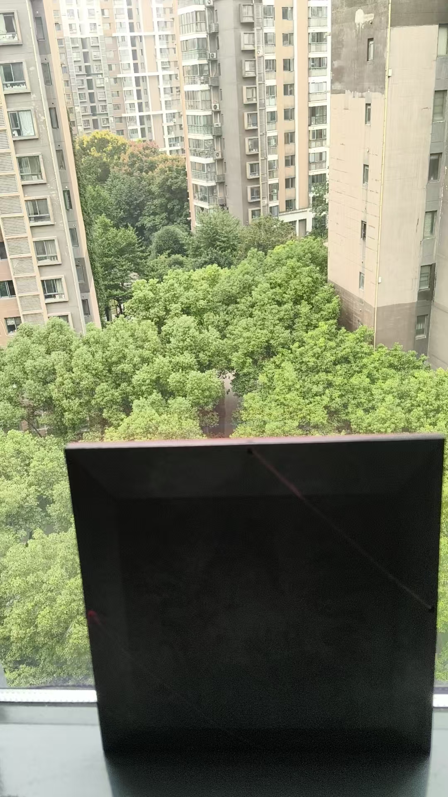
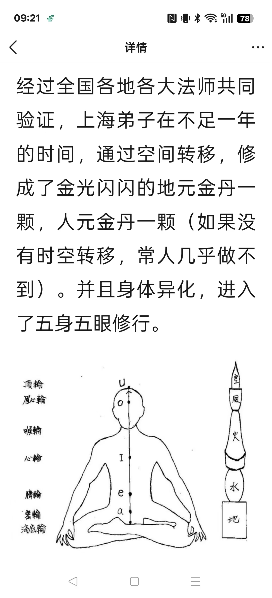
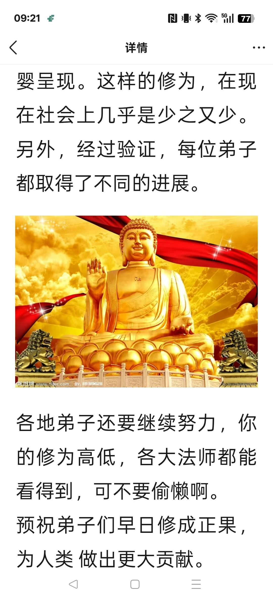
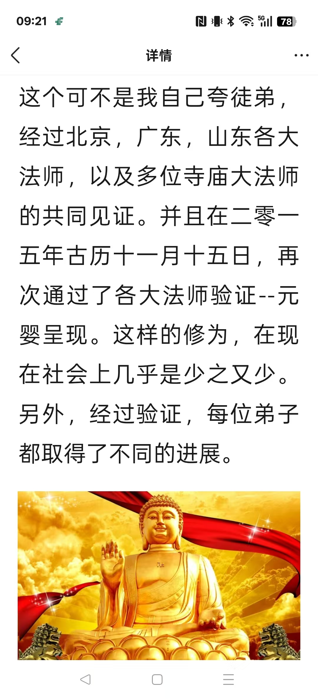
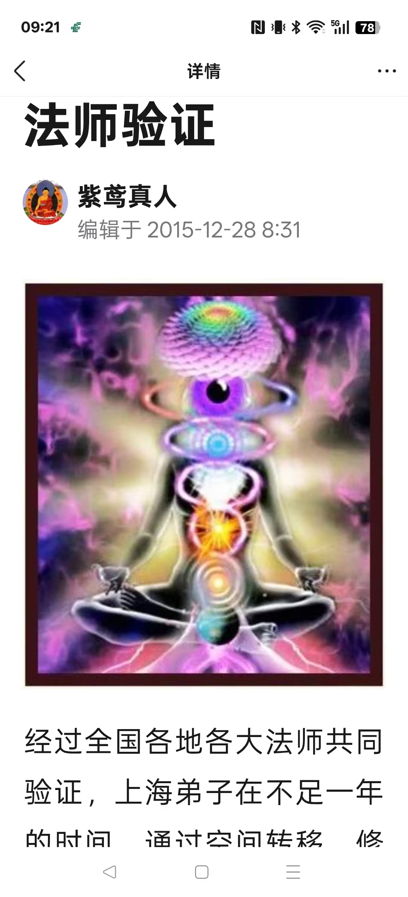

20260919找到你们的原神，修为最高果，时空异位，引领下来
风水布局
我说大人学赠送小孩，非要给
我没时间带孩子学习
只能快速开发几个功能
小女孩，肚子疼凉痛经，刚说完，还没开始拉手，肚子已经发烫了
[憨笑][憨笑]
上海学生过来助阵，展示
一个男孩子，肩膀受伤过
左腿受伤过
右脚骨折过，并且打篮球，伤过五次
上海这弟子都说的一清二楚
青出于蓝胜于蓝
真没想到，这弟子这么厉害
真是给我长脸了
众人佩服的不得了
增强了他们的信心
第一天刚见面，两个学生提出质疑
另外几个在门外阳台上展示的，还行，
进房间，这两个什么也说不出来
怎么加持也没感觉
看窗外
两个楼角斜冲
就是两个壁刀煞
两个楼的缝
天斩煞

有三个，外煞把房间场搞乱了
用风水罗盘化解了一下
那两个马上身上发热，感应强烈了
看来必须谨小慎微啊
2015年，我QQ空间记录这学生




现在看来都精彩
我不记得我写过
这弟子找出来给学生们看
十几年前，我就做的这么精彩
还有健身房
[强][强][强]
@紫鸢真人 师父时空转移是什么意思！怎么才能做到啊？
我找到你们的原神，修为最高果，时空异位，引领下来
你们就迅速获得超能
@紫鸢真人 我不信 ，你让你几个徒弟都获得超能看看，成人徒弟[偷笑]
[动画表情]
很多成人徒弟有超能，曾经修为境界不同，真人常说人各有福，都不一样
对，师傅领进门，修行在个人
@龙玉 [呲牙][呲牙]
八百多弟子，近七百动是成人
最大的七十多岁
你让他能都能迅速获得成就吗？这个我不相信，能上一半都很难
不在弟子有多少，而是成就的弟子有多少
人人成就
你可以不相信自己的眼睛，但真人是真人，必须相信[憨笑][憨笑][憨笑][憨笑]
我不是教学
是点化得道成仙
这些大人孩子，必须掌握隔空诊病，虚体针灸等绝技
没有针，有治疗效果
人人都会
但不是常人做到的事
不用针，就没有医疗事故，也就永远不但责任
@龙玉 你可以深入研究
别在远处怀疑，你本来早该修练了
一个学生回老家接老公孩子去了，不厉害，怎么能打动人
[呲牙][呲牙][呲牙]
我也希望真人弟子人人可以成就，而不是说食不饱，画饼充饥
[呲牙][呲牙][呲牙]
信不信我画的饼，真能充饥
不信，如果真人开个画饼充饥店，来吃的人都不埃饿就信[呲牙]
[呲牙][呲牙]
画饼充饥，这是意念造物呀[强]
@未来可期 这是什么呀
佛88图
[强][强][强]